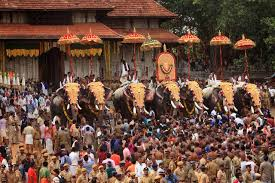

Thrissur (originally Thirusivaperoor, formerly Trichur) is a popular city and district in the central part of Kerala in Southern India.It is known as the cultural capital of Kerala, with numerous cultural institutions, art centers, museums, etc. Thrissur is one of the oldest cities in Kerala. The legend says that the city was the town created by Lord Parasurama (6th incarnation of Lord Vishnu) soon after formation of Kerala, by creating a large Shiva temple. The entire city is formed around the grand Shiva temple known as Vadakumnathan Temple. The temple is in the center of a mega roundabout that is 64 acres (26 hectares) in area. This roundabout is known as Swaraj Round. All roads connect to this.
Perhaps when Indians think of Thrissur, the first image would be the famous Thrissur Pooram festival, the most colourful and spectacular temple festival of Kerala. This is also known as largest festival in Kerala. The festival is at the Vadakkumnathan temple grounds, in April or May. The city is equally famous for the final celebrations of the Onam festival, which is the national festival of Kerala. It hosts the famous Pulikali during Onam celebrations in August or September (depends on Malayalam calendar). Apart from festivals and culture, Thrissur is also well known as one of the best shopping centers in Kerala for silks and gold ornaments. The city is also known as Entrepreneurial City, due to presence of large number of entrepreneurs working in various trades.
Main attractions are:
Athirappilly Waterfalls
Vilangan Kunnu

-
Thrissur Pooram
